Начало. Москва. 1866-1896
Василий Васильевич Кандинский родился 16 (4) декабря 1866 г. в Москве, в обеспеченной культурной семье коммерсанта. В 1871 году семья перебралась в Одессу, где его отец управлял чайной фабрикой. Там, наряду с посещением классической гимназии, мальчик учится игре на фортепиано и виолончели и занимается рисованием с частным преподавателем. "Помню, что рисование и несколько позже живопись вырывали меня из условий действительности", - писал он впоследствии. Уже в детских работах Кандинского встречались весьма нетрадиционные цветовые сочетания, которые он объяснял тем, что "каждый цвет живет своей таинственной жизнью".
Однако родители Василия в будущем видели его юристом. В 1886 году он едет в Москву, где поступает на юридический факультет Московского университета. Блестяще окончив обучение, через шесть лет Василий женится на своей кузине Анне Чемякиной. В 1893 году он становится доцентом юридического факультета и остается преподавать. В 1896 году знаменитый Дерптский университет в Тарту, где в то время происходил процесс русификации, предлагает тридцатилетнему Кандинскому место профессора юриспруденции, но именно в это время он решает оставить многообещающую карьеру и полностью посвятить себя живописи. Впоследствии Кандинский вспоминал о двух событиях, повлиявших на это решение: посещение выставки французских импрессионистов в Москве в 1895 году, где он был потрясен картиной Клода Моне "Стога сена", и впечатление от оперы Рихарда Вагнера "Лоэнгрин" в Большом театре.
Метаморфозы. Мюнхен. 1896-1911
В 1896 году он отправляется в Мюнхен, считавшийся тогда одним из центров европейского искусства, и записывается в престижную частную школу югославского художника Антона Ажбе, где получает первые навыки в построении композиции, в работе с линией и формой. Однако весьма скоро школа перестает удовлетворять его потребностям. Позднее художник напишет: "Нередко я уступал искушению "прогулять" занятие и отправиться с этюдником в Швабинг, Энглишер-Гартен или парки на Изаре". В 1900 г. после неудачной попытки предыдущего года, Кандинский поступает в Мюнхенскую академию художеств, в класс Ф. Штука, "первого немецкого рисовальщика". Мастер доволен своим учеником, но считает его палитру слишком яркой. Выполняя его требования, Кандинский целый год пишет исключительно в черно-белой гамме, "изучая форму как таковую".
В этот период Кандинский знакомится с молодой художницей Габриэль Мюнтер, а в 1903 году расстается со своей женой Анной Чемякиной. Следующие пять лет они вместе с Габриэль путешествуют по Европе, занимаясь живописью и участвуя в выставках. Вернувшись в Баварию, селятся в маленьком городке Мурнау у подножия Альп. Начинается этап интенсивного и плодотворного поиска. Работы этих лет - в основном пейзажи, построенные на цветовых диссонансах. Игра цветовых пятен и линий постепенно вытесняет образы реальной действительности ("Ахтырка. Осень. Этюд", 1901; "Шлюз", 1901; "Старый город", 1902; "Синий всадник", 1903; "Берег залива в Голландии", 1904; "Мурнау. Двор замка", 1908). В эти же годы он обратился к русской сказочной, былинной старине, создав завораживающие образы ("Русский всадник", 1902; "Русская красавица в пейзаже", 1904), превратив в зримое таинственные предания о славянских деревянных городах ("Русская деревня на реке с ладьями", ок. 1902; "К городу",ок.1903).
"Синий всадник". 1911-1914
Активная творческая деятельность, организующее начало всегда делали Кандинского центром притяжения всего интеллектуального, неспокойного, ищущего, что было в мире искусства того времени. Так, уже в 1901 г. он основывает в Мюнхене художественное объединение "Фаланга" и организует при нем школу, в которой сам же и преподает. За четыре года Кандинский устраивает двенадцать выставок состоящих в "Фаланге" живописцев. В 1909 году он, вместе с Явленским, Канольдтом, Кубином, Мюнтер и другими, основывает "Новое объединение художников, Мюнхен" и берет на себя председательство. Кредо общества: "Каждый из участников не только знает, как сказать, но знает и что сказать". С 1900 г. Кандинский участвует в выставках Московского товарищества художников, а в 1910 и 1912 г. в выставках художественного объединения "Бубновый валет". Также, он публикует художественно-критические "Письма из Мюнхена" в журналах "Мир искусства" и "Аполлон" (1902, 1909). В1911 году Кандинский вместе со своим другом, художником Францем Марком, организовывает группу "Синий всадник". По словам самого художника, "акцент делался на выявлении ассоциативных свойств цвета, линии и композиции, а привлекались при этом столь различные источники, как романтическая теория цвета Гете и Филиппа Рунге, "югендстиль" и теософия Рудольфа Штайнера".
Ни в какое другое время живопись Кандинского не развивалась так стремительно, как в мюнхенские годы, - писал М.К. Лакост. - Порою нелегко бывает понять, почему основатель абстрактной живописи вначале избирал сюжеты, типичные для бидермейера - веера, кринолины, всадники. Стиль его ранних произведений не назовешь ни условным, ни манерным, но в них еще ничего не предвещало радикального обновления живописи. Впрочем, как известно, лишь немногим художникам бывает дано одновременно проявлять оригинальность в форме и в содержании. Сначала Кандинскому было важно испытать собственные возможности выражения. Хотя "Вечеру" (1904-1905) нельзя отказать в своеобразии, однако трудно себе представить, что создал ее тот самый художник, который через пять-шесть лет произведет на свет первое в истории искусства абстрактное произведение (1910). Какая великая творческая сила должна была действовать в Кандинском! Какая стремительная эволюция с 1908 по 1914 год - от пейзажных картин, хотя и дерзких уже по цвету и форме, но все еще верных наблюдениям натуры, как "Дома в Мурнау на Обермаркт" (1908), до хаотического этюда под названием "Ущелье" (1914) и беспокойных композиций в серии панно "Времена года" в музее Гуггенхейма ("Осень"). Было бы затруднительно угадать руку одного и того же художника в еще вполне предметных "Крестоносцах" (1903) и в такой абстрактной работе, как "Композиция VII", 1913, несмотря на общую им динамику. Тут скованный порыв, там - раскрепощенное движение".
В то же время Кандинский отдает дань литературной деятельности. В 1912 году выходит книга "О духовном в искусстве". Перевернувшая устоявшееся представление об искусстве вообще, эта книга стала первым теоретическим обоснованием абстракционизма. Придя к мысли, что "цели (а потому и средства) природы и искусства существенно, органически и мирозаконно различны - и одинаково велики... и одинаково сильны", художник провозгласил творческий процесс "самовыражением и саморазвитием духа". Также Кандинский пишет мемуары "Оглядываясь назад" (1913 год; в русском переводе - "Ступени"), сборник стихов "Звуки" (1913 год) с 55 черно-белыми и цветными литографиями.
Возвращение в Россию. 1914-1921
С началом мировой войны Кандинский как гражданин России, вынужден покинуть Германию. 3 августа 1914 года они с Габриэль переезжают в Швейцарию, где Кандинский приступает к работе над книгой о "точке и линии". К ноябрю этого же года они расстаются. Габриэль возвращается в Мюнхен, а Кандинский едет в Москву. Осенью 1916 года Кандинский знакомится с Ниной Андреевской, дочерью русского генерала на которой он женится в феврале 1917 года. В эти кризисные годы революции Кандинский колеблется между языком полуабстракций, импрессионистическими пейзажами и романтическими фантазиями. В абстрактных картинах усиливается геометризация отдельных элементов, причиной чему, во-первых, собственный процесс упрощения, а во-вторых - авангардистско-художественная атмосфера Москвы того времени.
В России Кандинский находится в русле послереволюционного культурно-политического развития. С 1918 по 1921 год он сотрудничает с ИЗО Наркомпроса в области художественной педагогики и музейной реформы. Между 1919 и 1921 годами публикует шесть больших статей. В качестве председателя Государственной закупочной комиссии при Музейном бюро Отдела ИЗО Наркомпроса участвует в организации двадцати двух провинциальных музеев. Но самое большое влияние Кандинский оказывает как преподаватель московского Свомаса (Свободные Мастерские), а затем Вхутемаса. Будучи его профессором с октября 1918 года, он составляет специальный учебный план, основанный на анализе цвета и формы, то есть развивающий идеи, высказанные в книге О духовном в искусстве. Также, участвуя в организации и управлении московским Институтом художественной культуры (Инхук) он составляет для него учебный план, основываясь на своей теории. Однако здесь мнения с коллегией института расходятся. Противники Кандинского - Родченко, Степанова и Попова - за точный анализ материалов, их конструктивное расположение и оформление. Любое проявление иррациональности в творческом процессе решительно отрицается. Кандинский, в свою очередь, энергично выступает против своих оппонентов-конструктивистов: "Если художник использует абстрактные средства выражения, это еще не означает, что он абстрактный художник. Это даже не означает, что он художник. Существует не меньше мертвых треугольников (будь они белыми или зелеными), чем мертвых куриц, мертвых лошадей и мертвых гитар. Стать "реалистическим академиком" можно так же легко, как "абстрактным академиком". Форма без содержания не рука, но пустая перчатка, заполненная воздухом". Постоянные нападки коллег-художников, считавших его работы "изуродованным спиритизмом" (Пунин) являются решающим фактором для отъезда Кандинского из Москвы в декабре 1921 года. Давление социалистической идеологии на искусство, приведшее впоследствии к появлению соцреализма, начинается после 1922 года. Картины Кандинского на долгие годы убирают из советских музеев.
Баухаус. 1922-1933
По возвращении в Германию, Кандинский принимает приглашение Вальтера Гропиуса, основателя знаменитого Баухауса (Высшая школа строительства и художественного конструирования) и они с Ниной переезжают в Веймар, где Кандинский возглавляет мастерскую настенной живописи. Он снова преподает и развивает свои идеи. Это касается, прежде всего, усиленного аналитического изучения отдельных элементов картины, результаты которого он представляет в 1926 году в сочинении Точка и линия на плоскости. Также Кандинский много работает и экспериментирует с цветом, применяя аналитическую базу и полученные выводы в преподавательской деятельности. Творчество Кандинского вновь претерпевает изменения: отдельные геометрические элементы все более выступают на первый план, палитра насыщается холодными цветовыми гармониями, которые, порой, воспринимаются как диссонанс, особо используется круг, как чувственный символ совершенной формы. "Композиция VIII", 1923 - главная работа веймарского периода. Наряду с концептуальными работами, в это время он создает богатые фантазией Маленькие миры для издательства "Пропилеи" и несколько камерных, "интимных" картин, таких как "Маленькая мечта в красном", 1925. Также Кандинский ведет лекционную и выставочную деятельность в США, основав вместе с Фейнингером, Клее и Явленским объединение "Синяя четверка".
В 1925 году, вследствие нападков правых партий, Баухаус в Веймаре закрывается. Второй период Баухауса в Дессау начинается в весьма благоприятных условиях: Кандинский и другие художники получают несколько свободных классов живописи, где они, помимо преподавания, могут заниматься собственным творчеством. "Желтое-Красное-Синее", 1925 - одна из знаковых работ, характеризующих этап "холодной романтики" в живописи Кандинского. "Круг, который я использую в последнее время столь часто, можно назвать не иначе, как романтическим. И нынешняя романтика существенно глубже, прекраснее, содержательнее и благотворнее - она - кусок льда, в котором пылает огонь. И если люди чувствуют только холод и не чувствуют огня - тем хуже для них..." В Дессау Кандинского с новой силой увлекают романтические идеи "гезамткунстверк" (идея синтеза искусств в одном произведении). Эти идеи воплощаются в произведении "Желтый звук" и изобразительном сопровождении "Картинок к выставке" Мусоргского.
Живопись Кандинского последних лет Баухауса пронизана легкостью и странным юмором, которые вновь проявятся в его поздних парижских работах. К ним, например, можно отнести картину "Причудливое", 1930, навевающую космически - египетские ассоциации и наполненную сказочными символическими образами в духе Пауля Клее, художника, с которым Кандинский дружен в эти годы. Около 1931 года разворачивается масштабная кампания национал-социалистов против Баухауса, которая приводит к его закрытию в 1932 году. Кандинский с женой эмигрируют во Францию, где селятся в новом доме в парижском предместье Нейи-сюр-Сен. Между 1926 и 1933 годами Кандинский написал 159 картин маслом и 300 акварелей. Многие из них были, к сожалению, утрачены после того, как нацисты объявили живопись Кандинского и многих других художников "дегенеративной".
Биоморфная абстракция. Париж. 1934-1944
Парижская художественная среда на появление Кандинского реагирует сдержанно. Причины тому - ее обособленность от иностранных коллег и отсутствие признания абстрактной живописи как таковой. В результате художник живет и работает уединенно, ограничиваясь общением лишь со старыми друзьями. В это время происходит последнее преобразование его живописной системы. Теперь Кандинский не использует сочетания основных цветов, а работает с неяркими, рафинированными, тончайшими цветовыми нюансами. Одновременно, он дополняет и усложняет репертуар форм: на первый план выходят новые, биоморфные элементы, которые непринужденно чувствуют себя в пространстве картины, словно плавая по всей поверхности холста. Картины Кандинского этого периода далеки от ощущения "холодной романтики", в них кипит и бурлит жизнь (см. картины "Небесно-голубое", 1940, "Сложное-простое", 1939, "Пестрый ансамбль", 1938 и др.). Сам художник назвал этот период творчества "поистине живописной сказкой". В последующие военные годы из-за нехватки материалов форматы картин становятся все меньше, вплоть до того момента, когда художник вынужден довольствоваться работой гуашью на картонах небольшого формата. И вновь он сталкивается в неприятием публикой и коллегами своего искусства. И вновь развивает и совершенствует свою теорию базу: "Абстрактное искусство создает рядом с "реальным" новый мир, с виду ничего общего не имеющий с "действительностью".

 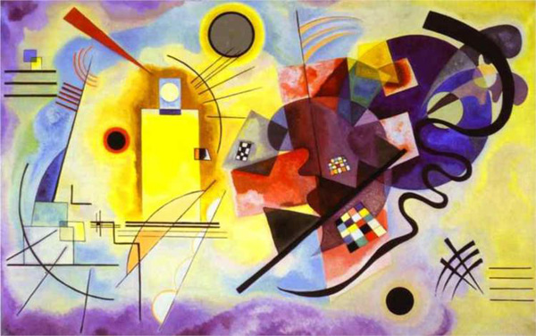
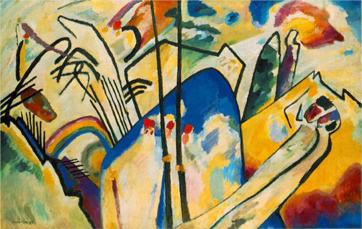
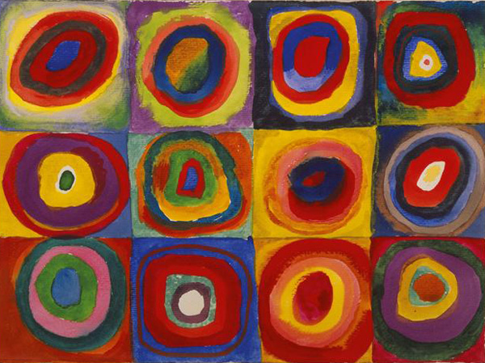
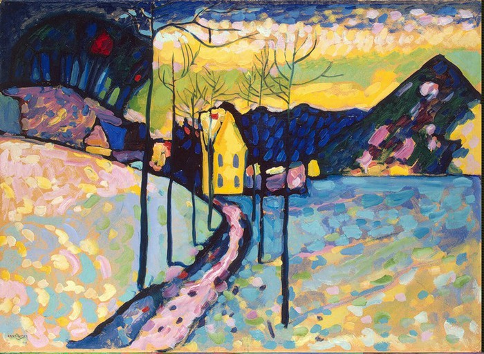
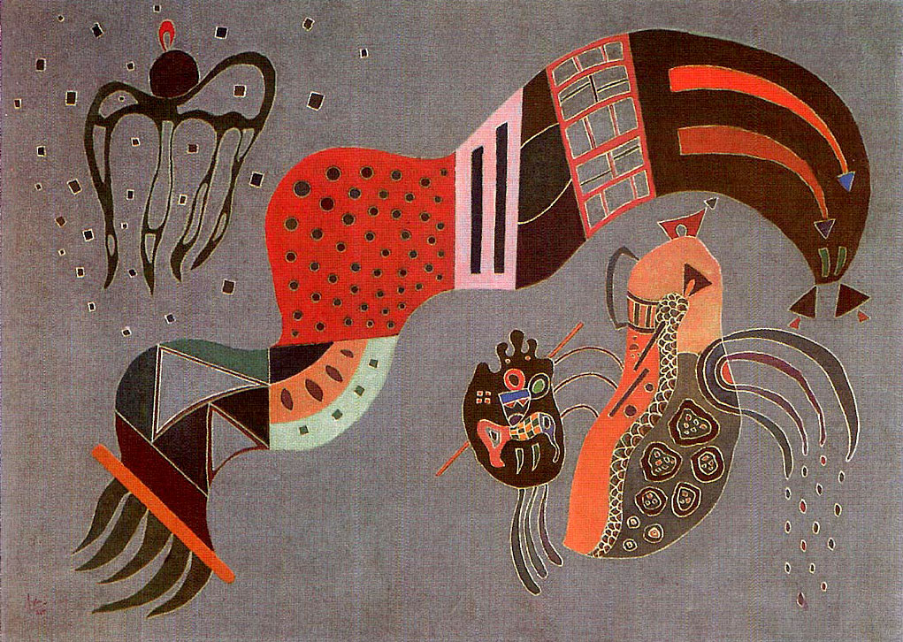
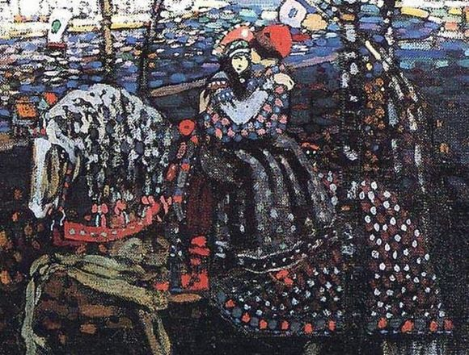
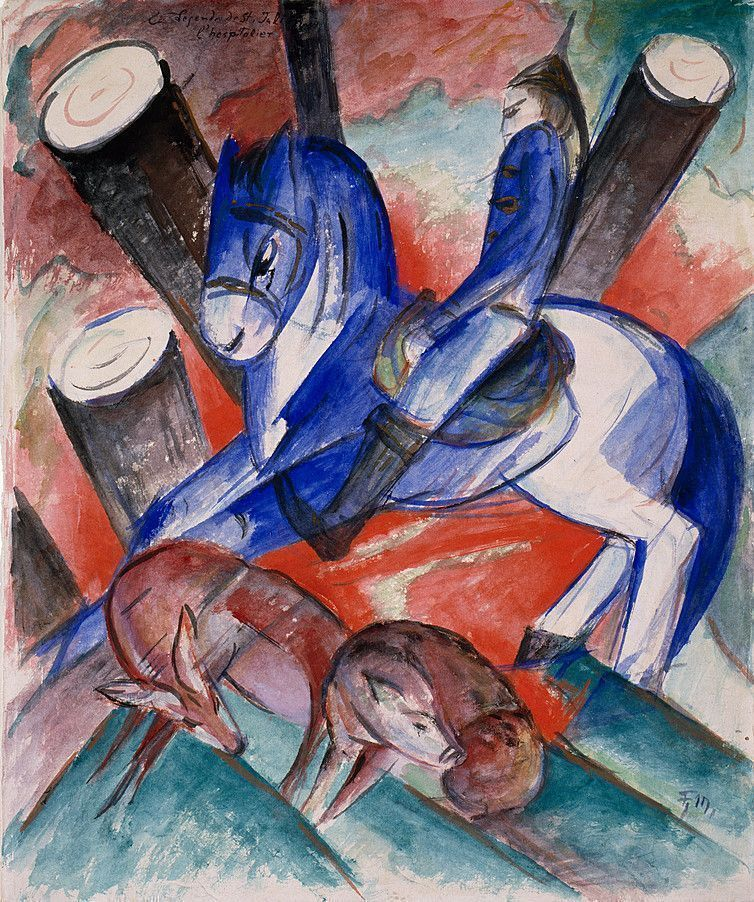
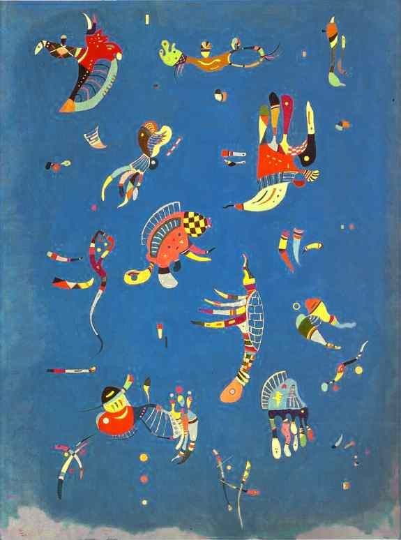
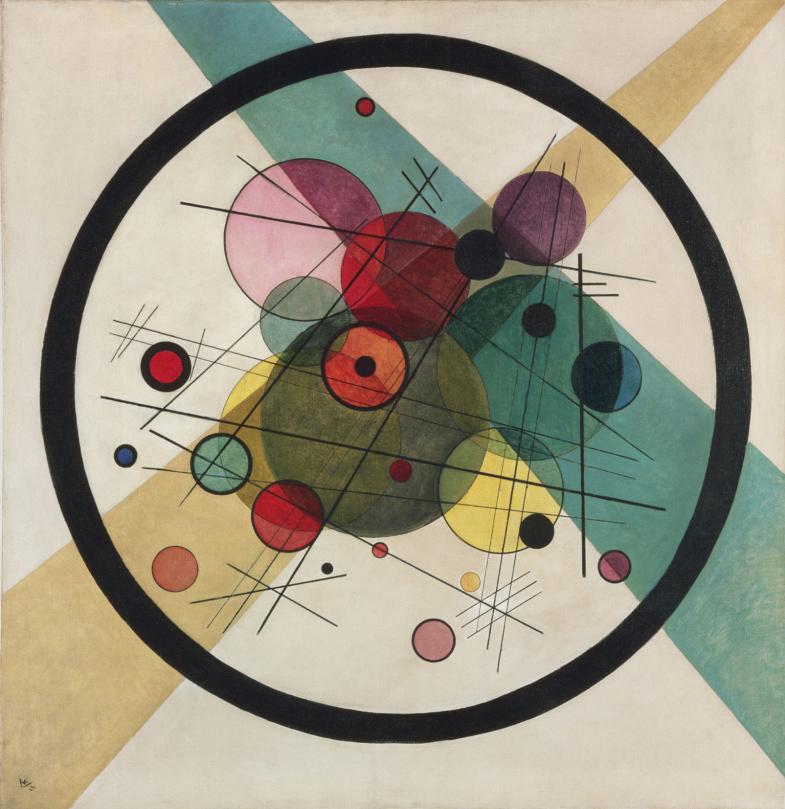
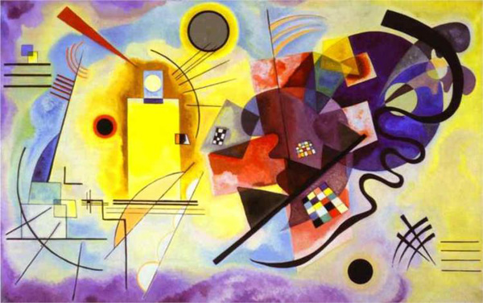
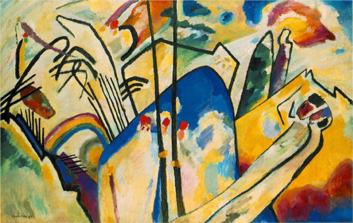
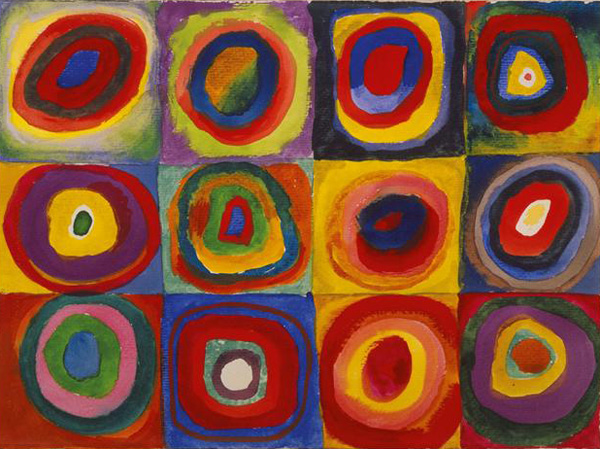
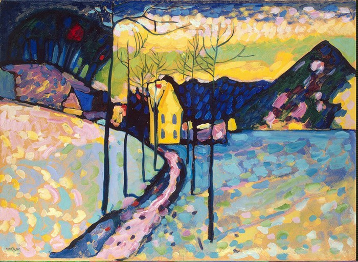
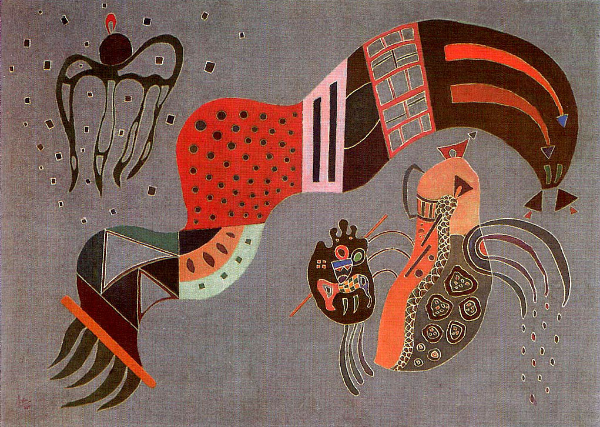
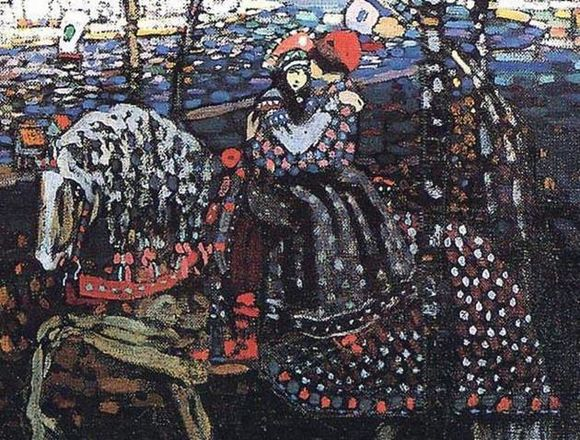
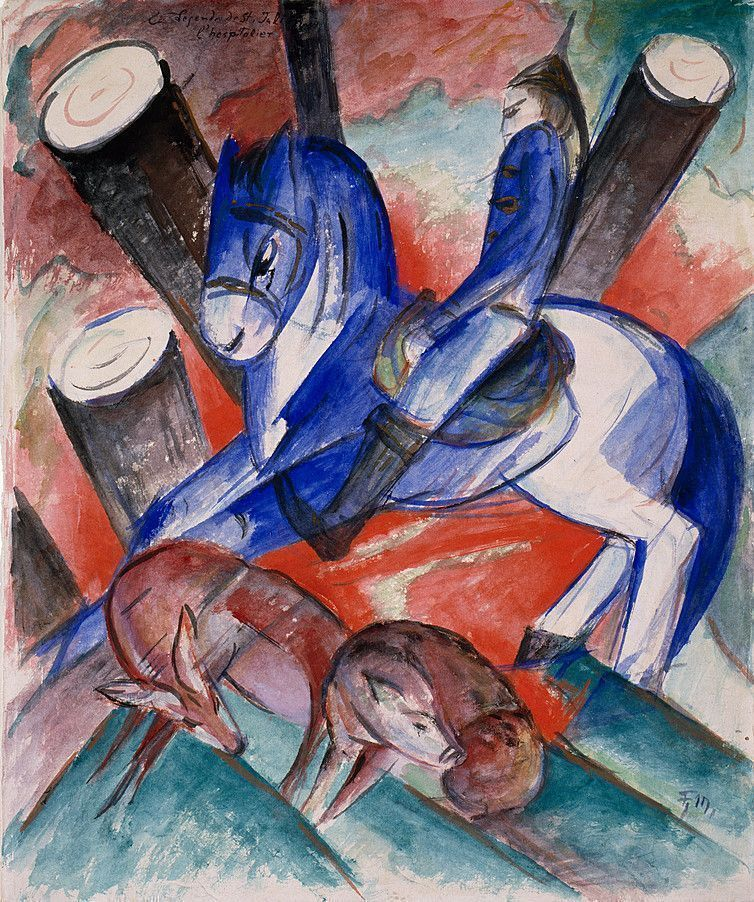
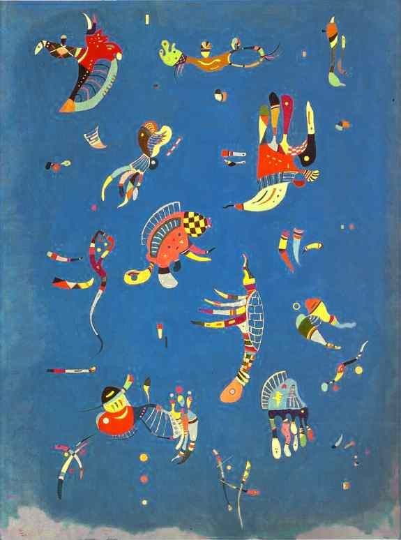
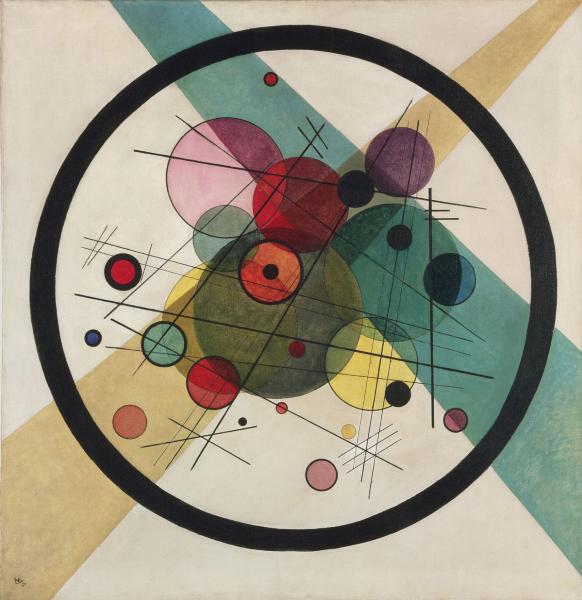